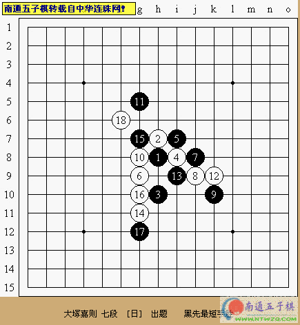
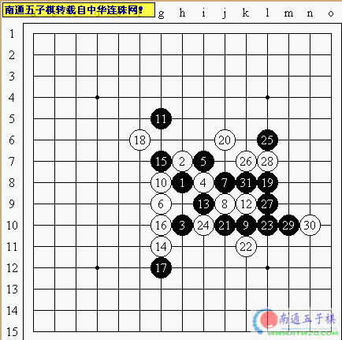
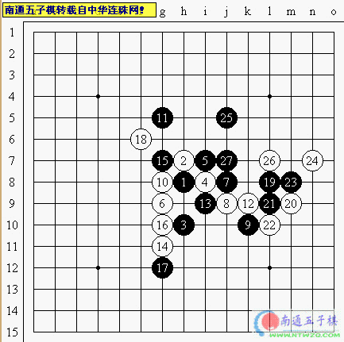

中华连珠网之每周习题（一1）
#1 中华连珠网之每周习题（一1）作者：有志青年 发表时间：2006-5-29 17:02:50
题目选自日本连珠社机关志《连珠世界》2005年1月号上级题

答案:


#2 Re:中华连珠网之每周习题（一1）作者：zz06zz 发表时间：2006-5-30 13:14:55
支持#3 Re:中华连珠网之每周习题（一1）作者：zz06zz 发表时间：2006-5-30 13:32:03
答案2的25手真是........#4 Re:中华连珠网之每周习题（一1）作者：xism 发表时间：2006-5-30 17:54:45
答案#5 Re:中华连珠网之每周习题（一1）作者：光辉 发表时间：2006-5-31 1:01:37
看看
#6 Re:中华连珠网之每周习题（一1）作者：蓝调 发表时间：2006-5-31 12:28:16
看看#7 Re:中华连珠网之每周习题（一1）作者：鼠标 发表时间：2006-6-3 9:02:07
学习一下
#8 Re:中华连珠网之每周习题（一1）作者：义游 发表时间：2006-6-12 23:48:22
学习#9 Re:中华连珠网之每周习题（一1）作者：duwenfang 发表时间：2006-6-14 18:56:13
15是个好棋.#10 Re:中华连珠网之每周习题（一1）作者：罗果 发表时间：2006-6-17 23:22:45
看看初次来此有何收获#11 Re:中华连珠网之每周习题（一1）作者：顺风 发表时间：2006-6-21 16:19:12
看答案#12 Re:中华连珠网之每周习题（一1）作者：天屎下饭 发表时间：2006-6-25 6:49:50
看看答案，实在想不出～～
#13 Re:中华连珠网之每周习题（一1）作者：800122 发表时间：2006-6-29 22:23:23
学习下#14 Re:中华连珠网之每周习题（一1）作者：龙君啸 发表时间：2006-7-7 10:49:59
看看答案怎样的#15 Re:中华连珠网之每周习题（一1）作者：仙人掌 发表时间：2006-7-10 15:18:09
学习#16 Re:中华连珠网之每周习题（一1）作者：无尘 发表时间：2006-7-10 15:44:17
好题．#17 Re:中华连珠网之每周习题（一1）作者：晕晕男人 发表时间：2006-7-14 21:59:16
看看#18 Re:中华连珠网之每周习题（一1）作者：江风 发表时间：2006-7-15 20:44:14
有志有门精啊#19 Re:中华连珠网之每周习题（一1）作者：dajiao 发表时间：2006-7-27 23:29:46
cao ni ma#20 Re:中华连珠网之每周习题（一1）作者：磐石 发表时间：2006-7-28 18:19:02
刻苦#21 Re:中华连珠网之每周习题（一1）作者：泉之潮 发表时间：2006-7-29 0:04:31
see#22 Re:中华连珠网之每周习题（一1）作者：棋缘 发表时间：2006-7-31 12:51:51
看看#23 Re:中华连珠网之每周习题（一1）作者：hazel 发表时间：2006-8-4 10:23:35
kankan#24 Re:中华连珠网之每周习题（一1）作者：xialin 发表时间：2006-8-4 16:26:03
看看#25 Re:中华连珠网之每周习题（一1）作者：qwshu 发表时间：2006-8-13 21:36:12
我想看
#26 Re:中华连珠网之每周习题（一1）作者：清逸 发表时间：2006-8-13 23:24:05
学习~~
#27 Re:中华连珠网之每周习题（一1）作者：zi5wei 发表时间：2006-8-15 18:45:33
uy76gg#28 Re:中华连珠网之每周习题（一1）作者：golgyy 发表时间：2006-8-16 12:55:57
想了好几种对黑好象都没优了，不知道结果是什么#29 Re:中华连珠网之每周习题（一1）作者：三眼蟹 发表时间：2006-8-16 14:04:34
谢谢#30 Re:中华连珠网之每周习题（一1）作者：大鹏 发表时间：2006-8-22 19:40:11
谢谢
#31 Re:中华连珠网之每周习题（一1）作者：酒鬼 发表时间：2006-8-22 21:30:41
老师，辛苦！#32 Re:中华连珠网之每周习题（一1）作者：猷鲵 发表时间：2006-8-26 17:32:58
学习一下#33 Re:中华连珠网之每周习题（一1）作者：我是新手 发表时间：2006-8-27 14:24:53
看看#34 Re:中华连珠网之每周习题（一1）作者：pwxcmy 发表时间：2006-8-27 16:39:32
333333333333333333333333333333333333333333333333333333333333333333#35 Re:中华连珠网之每周习题（一1）作者：liyach 发表时间：2006-8-29 0:11:57
#36 Re:中华连珠网之每周习题（一1）作者：zzp197 发表时间：2006-8-31 20:23:05
看看#37 Re:中华连珠网之每周习题（一1）作者：蚯蚓降龙 发表时间：2006-9-1 22:59:59
我猜不出来
#38 Re:中华连珠网之每周习题（一1）作者：日暮修竹 发表时间：2006-9-5 13:10:18
妙着#39 Re:中华连珠网之每周习题（一1）作者：wsry 发表时间：2006-9-6 23:48:58
bu hui zuo
#40 Re:中华连珠网之每周习题（一1）作者：检查用户名 发表时间：2006-9-7 13:40:48
我来练练，谢谢：）
#41 Re:中华连珠网之每周习题（一1）作者：退无可守 发表时间：2006-9-8 17:38:23
不好想啊#42 Re:中华连珠网之每周习题（一1）作者：啊丫呀 发表时间：2006-9-8 18:08:30
学习学习#43 Re:中华连珠网之每周习题（一1）作者：蚯蚓降龙 发表时间：2006-9-8 23:25:12

#44 Re:中华连珠网之每周习题（一1）作者：Camel 发表时间：2006-9-9 2:33:07
看一下
#45 Re:中华连珠网之每周习题（一1）作者：1qaz11 发表时间：2006-9-10 0:10:33
回复#46 Re:中华连珠网之每周习题（一1）作者：shi123 发表时间：2006-9-11 20:50:20
支持#47 Re:中华连珠网之每周习题（一1）作者：星尘 发表时间：2006-10-8 16:11:39
看看
#48 Re:中华连珠网之每周习题（一1）作者：锈刀 发表时间：2006-10-8 22:37:11
kankan
#49 Re:中华连珠网之每周习题（一1）作者：特磨道 发表时间：2006-10-9 8:12:32
是h6吗？#50 Re:中华连珠网之每周习题（一1）作者：杨华明 发表时间：2006-10-9 10:06:43
学学#51 Re:中华连珠网之每周习题（一1）作者：天涯游子 发表时间：2006-10-12 9:55:06
==这里放特殊贴的内容== 有志提供的答案:
正确答案:(二者相差一个棋子)
●成交凭证：购买者 天涯游子 已付出20金币！（甲联）
●成交凭证：购买者 天涯游子 已付出20金币！（乙联）
#52 Re:中华连珠网之每周习题（一1）作者：天涯游子 发表时间：2006-10-12 10:11:44
==这里放特殊贴的内容== 有志提供的答案:
正确答案:(二者相差一个棋子)
●成交凭证：购买者 天涯游子 已付出20金币！（甲联）
●成交凭证：购买者 天涯游子 已付出20金币！（乙联）
#53 正确答案:作者：天涯游子 发表时间：2006-10-12 10:18:42
==这里放特殊贴的内容== 有志提供的答案:
正确答案:(二者相差一个棋子)
●成交凭证：购买者 天涯游子 已付出20金币！（甲联）
●成交凭证：购买者 天涯游子 已付出20金币！（乙联）
#54 Re:中华连珠网之每周习题（一1）作者：duanwh 发表时间：2006-10-12 13:52:16
afa#55 Re:中华连珠网之每周习题（一1）作者：破网的蜘蛛 发表时间：2006-10-12 14:30:20
看看，我自己好像也想出来了#56 Re:中华连珠网之每周习题（一1）作者：浪影 发表时间：2006-10-12 15:26:11
gfds#57 Re:中华连珠网之每周习题（一1）作者：开心 发表时间：2006-10-28 19:01:31
看了#58 Re:中华连珠网之每周习题（一1）作者：天天天 发表时间：2006-10-28 23:13:27
look#59 Re:中华连珠网之每周习题（一1）作者：刘军 发表时间：2006-10-29 12:52:53
简单
#60 Re:中华连珠网之每周习题（一1）作者：hhebb 发表时间：2006-11-4 23:39:23
学习一下#61 Re:中华连珠网之每周习题（一1）作者：格林鲍尔 发表时间：2006-11-4 23:55:14
学习一下
#62 Re:中华连珠网之每周习题（一1）作者：tyghbn 发表时间：2006-11-5 7:02:30
好棋
#63 Re:中华连珠网之每周习题（一1）作者：好累 发表时间：2006-11-7 11:50:42
看看#64 Re:中华连珠网之每周习题（一1）作者：菜鸟飞飞 发表时间：2006-11-7 12:28:53
看看#65 Re:中华连珠网之每周习题（一1）作者：风情雅 发表时间：2006-11-8 13:01:10
看看。想不出来。俺太笨了#66 Re:中华连珠网之每周习题（一1）作者：偷贼的井盖 发表时间：2006-11-10 11:54:53
~~~~~~~~~~~~~~~
#67 Re:中华连珠网之每周习题（一1）作者：冲窝兮 发表时间：2006-11-10 15:57:02
学习#68 Re:中华连珠网之每周习题（一1）作者：红袖手 发表时间：2006-11-11 19:35:08
我是新来的~这里还熟悉~请大家多指教:)#69 Re:中华连珠网之每周习题（一1）作者：火舞天下 发表时间：2006-11-13 15:28:49
学习一下#70 Re:中华连珠网之每周习题（一1）作者：shzzhy 发表时间：2006-11-16 19:26:38
先学习再看答案#71 Re:中华连珠网之每周习题（一1）作者：大侠 发表时间：2006-11-18 19:39:33
看看#72 Re:中华连珠网之每周习题（一1）作者：mardin 发表时间：2006-11-18 20:35:53
支持!
#73 Re:中华连珠网之每周习题（一1）作者：才疏学浅 发表时间：2006-11-22 19:04:38
看一下答案
#74 Re:中华连珠网之每周习题（一1）作者：ntren 发表时间：2006-11-23 16:28:47
kankan#75 Re:中华连珠网之每周习题（一1）作者：mhj052 发表时间：2006-11-23 16:43:58
en en en#76 Re:中华连珠网之每周习题（一1）作者：棠 发表时间：2006-11-23 18:14:26
ok#77 Re:中华连珠网之每周习题（一1）作者：那一剑的风情 发表时间：2006-11-24 22:41:57
好的 我看看#78 Re:中华连珠网之每周习题（一1）作者：lls104 发表时间：2006-11-25 11:14:44
学学#79 Re:中华连珠网之每周习题（一1）作者：17号蓝星仔 发表时间：2006-11-26 7:39:35
顶...鼎.....#80 Re:中华连珠网之每周习题（一1）作者：狮狮 发表时间：2006-12-18 9:05:06
支持#81 Re:中华连珠网之每周习题（一1）作者：旅人 发表时间：2006-12-22 15:21:00
看看.想不到五子棋居然还挺复杂的.#82 Re:中华连珠网之每周习题（一1）作者：求学者 发表时间：2006-12-22 17:43:24
看一看#83 Re:中华连珠网之每周习题（一1）作者：gerbo 发表时间：2006-12-23 19:57:03
呵呵，看看
#84 Re:中华连珠网之每周习题（一1）作者：鹤舞菲祥 发表时间：2006-12-28 9:32:34
想看看答案，初学者，请多多指教#85 Re:中华连珠网之每周习题（一1）作者：天香小雪 发表时间：2007-1-2 23:16:34
看一下
#86 Re:中华连珠网之每周习题（一1）作者：爱我的人 发表时间：2007-2-27 13:54:30
学习#87 Re:中华连珠网之每周习题（一1）作者：友善 发表时间：2007-4-22 2:36:56
答案很有意思#88 Re:中华连珠网之每周习题（一1）作者：四方游客 发表时间：2007-7-19 23:53:41
整理合并提供下载啊#89 Re:中华连珠网之每周习题（一1）作者：lilied 发表时间：2007-7-21 11:11:55
这个19手强啊，25手必须！！！29、31都是必要的~一子双杀想节约黑子回导致黑负~~~
#90 Re:中华连珠网之每周习题（一1）作者：姑苏斤欠 发表时间：2007-9-16 14:27:15
难！#91 Re:中华连珠网之每周习题（一1）作者：若冰 发表时间：2007-10-9 1:50:07
怎么看的啊 郁闷 我看不到啊#92 Re:中华连珠网之每周习题（一1）作者：lmhcx 发表时间：2007-11-10 15:43:39
这19 手，我看了一晚上也没想到，笨死，，神来之笔#93 Re:中华连珠网之每周习题（一1）作者：云飞扬 发表时间：2007-11-11 9:13:02
29有价值
#94 Re:中华连珠网之每周习题（一1）作者：云飞扬 发表时间：2007-11-16 17:09:47

#95 Re:中华连珠网之每周习题（一1）作者：潇洒 发表时间：2009-3-31 14:49:19
图片是红叉了 有志修下